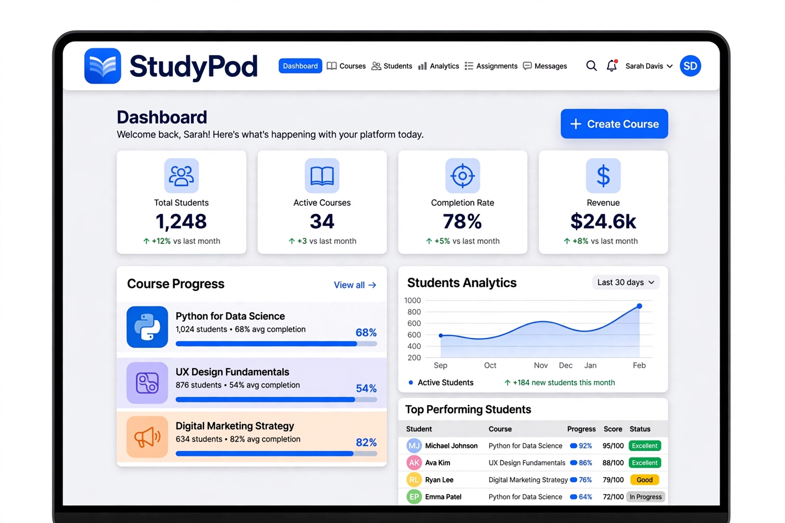
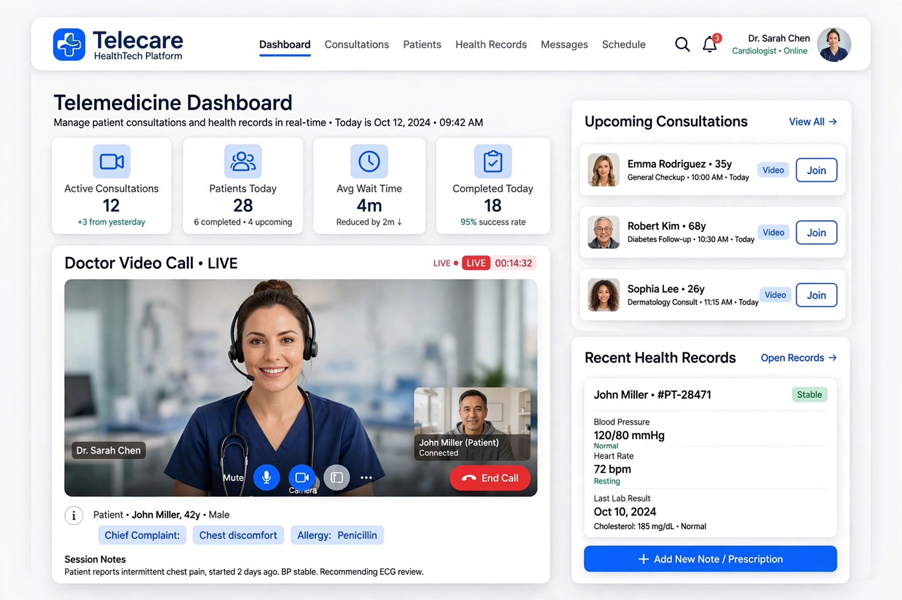
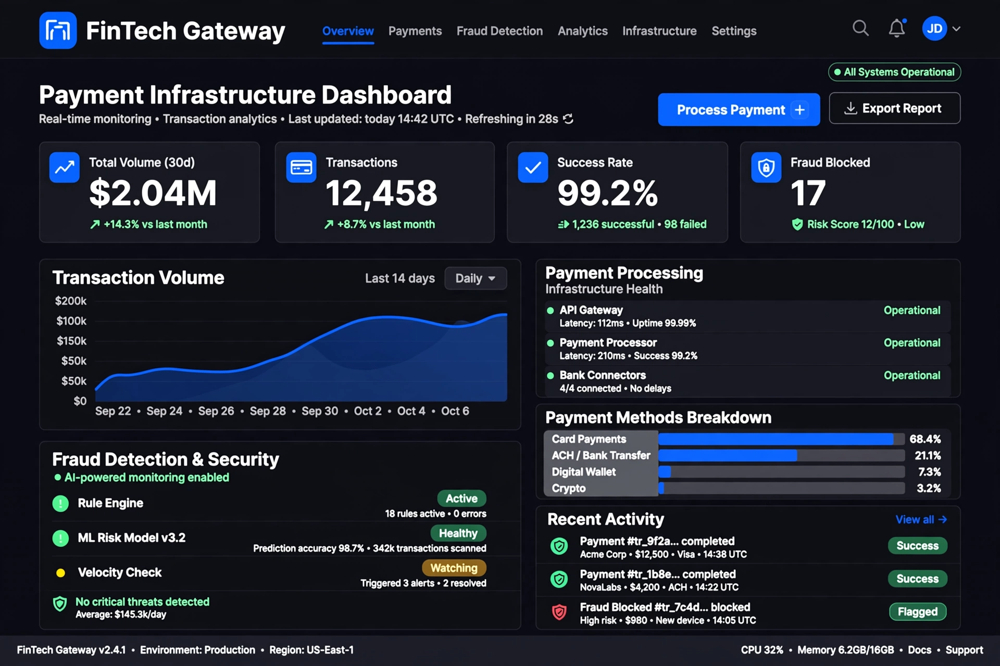

We've deployed hundreds of digital products across education, healthcare, finance and government. 5 flagship prove ideas become resilient infrastructure — production-ready, scalable & secure.
Every product below is live in production. They represent the 5 featured from 100+ deployed across sectors.

Live • EdTech45k+ learners, course management, assessments and progress analytics for modern education.

Live • HealthTechHIPAA-ready video consults, scheduling and patient records deployed in 12 clinics.

Live • FinTechSecure transaction processing, $2M+ monthly volume, 0.2s median latency at scale.